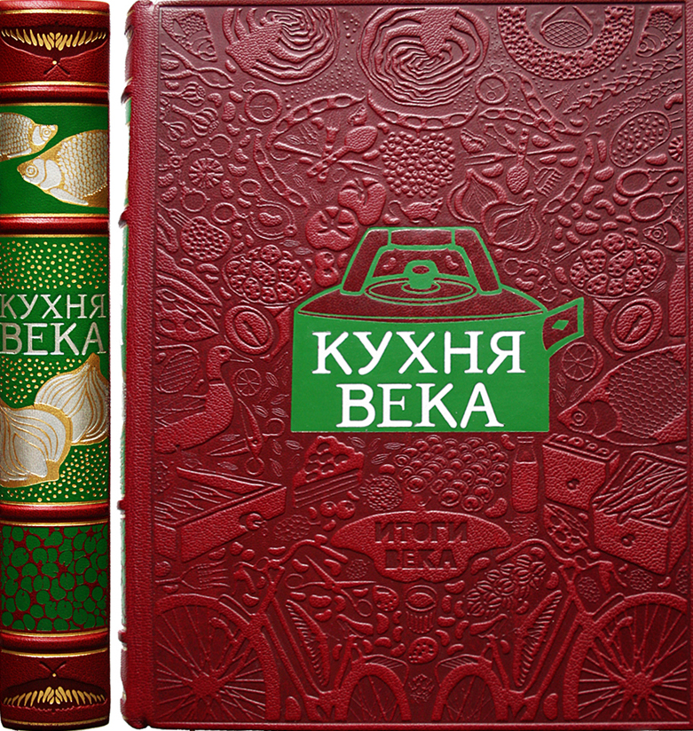

Техническая революция, преобразовавшая в XX в. тип очага, не могла не коснуться и всего остального кухонного оборудования и кухонной утвари, хотя, конечно, коренных изменений ножей, терок, взбивалок, кастрюль и тому подобных «инструментов» произойти не могло: их функции, сущность их действий были определены еще тысячелетие тому назад и не могли, разумеется, коренным образом измениться в считанные годы. Но в целом по удобству, по скорости работы и по внешнему виду все кухонное оборудование в XX в. пережило полнейшую трансформацию.
Изменения в кухонном оборудовании в Западной Европе и особенно в США начались непосредственно после первой мировой войны уже в 1919—1920 гг.
Огромные металлургические и машиностроительные предприятия Англии, Германии и США, получившие ускоренное развитие во время войны как военные заводы, были сразу же по окончании войны переключены на изготовление оборудования для больших, массовых, столовских кухонь нового типа.
Впервые в XX в. были созданы особые металлические резервуары гигантских размеров для хранения различных жидкостей, начиная с дистиллированной воды и масел и кончая различными активными средами — спиртом, уксусом, кислотами, причем эти новые емкости были специально приспособлены под каждую из этих жидких сред. Были созданы также новые типы котлов для кипячения и варки, мармиты, иные, более рациональные, формы кастрюль и сковород. Все это привело не только к изменению размеров, формы и дизайна прежнего кухонного оборудования, но и к изменению материала, из которого оно изготавливалось.
Луженую медную посуду, господствовавшую на кухне вплоть до начала XX в., уже не допустили во вторую четверть нашего столетия, ее заменили на алюминиевую, никелированную, эмалированную, а после второй мировой войны — на стальную нержавеющую и оксидированную во всех странах Европы и Америки.
Уже с 30-х годов, а еще более после второй мировой войны, были предприняты многочисленные эксперименты по изменению традиционной формы кухонной наплитной посуды с целью сделать ее более рациональной. Подлинные успехи в этом отношении, однако, наступили только в 60—70-х годах, когда в основу были, наконец, положены не просто красота, не заманчивый или оригинальный дизайн, а функциональность при приготовления пищи в емкостях определенной формы. Это произошло лишь после того, как западноевропейские дизайнеры ознакомились с различными предметами кухонной утвари Востока, в частности Японии и Китая, когда западные повара на практике убедились, что в ряде случаев европейские геометрически правильные формы кастрюль, сковородок, котлов затрудняют приготовление, отрицательно влияют на вкус пищи, на время ее готовности, создают, зачастую, условия, при которых особенно усиливается подгорание пищи. Вот почему вся посуда, выпускаемая на западе специализированными на кухонном оборудовании фирмами, с середины 70-х годов изготавливается с расширяющимся книзу диаметром, с полукруглыми, овальными (без прямых углов!) донными поверхностями, причем в кастрюлях стала преобладать не высота, не «вертикаль», как это было весь XX в., например, в советских кастрюлях, а горизонталь: то есть в кастрюлях должен быть нормой низкий, а не высокий цилиндр.
Из-за одной лишь этой, чисто геометрической ошибки появлялся стандартный и не особенно приятный, но навязчиво-однообразный, как в столовых, так и при домашнем приготовлении, вкус и запах всех советских супов. Винили всегда, конечно, поваров. А виноваты были, в значительной степени, наши заводские «конструкторы» и «дизайнеры».
«Нововведением» во второй половине XX в., а главным образом с середины 60-х годов, было возвращение на кухню неметаллической посуды, изгнанной в конце XIX в. как якобы несовременной.
С 60-х годов, наоборот, металлическая посуда перестает быть единственной и господствующей. На элитарные, а затем и на ресторанные кухни Европы возвращается «глиняная» посуда, изготовленная из новых керамических огнеупорных материалов с меньшим весом, не хрупкая, прочная как в температурном, так и в ударном отношении. Вместе с нею появляются и новые виды неметаллической посуды — кварцевой, ситалловой, стеклянной из огнеупорного стекла, причем последние с 70-х годов начинают постепенно завоевывать и массовую, домашнюю кухню.
Сама кухня, кухонное помещение, уже в первой половине XX в. начинает несколько перестраиваться, принимать более рациональную планировку, но настоящая революция в кухонной архитектуре и интерьере происходит лишь начиная с 70-х годов и достигает апогея в 80-е годы, захватывая к началу 90-х годов частную, индивидуальную, домашнюю кухню в России.
В ряде европейских стран создается промышленность, занятая производством комплексных интерьеров для кухонь, производящая весь комплект кухонной мебели и инвентаря с размещением его в заданном интерьере. Для всех этих новых видов кухонного интерьера характерно сочетание чисто функционального расположения кухонного оборудования, например «в одну линию», с одновременным решением эстетических задач с целью превращения кухонного помещения не только в место приготовления пищи, но и в «домашнюю столовую», в место для еды, в трапезную.
Резко изменяется и цветовая гамма кухни. В начале XX в., до первой мировой войны, стены, мебель, оборудование на кухне были выдержаны в темных, коричневатых тонах, что объяснялось как естественным цветом дубовой кухонной мебели — столов, шкафов, буфетов — и медной поверхностью кастрюль или черной поверхностью чугунных котелков, сковород, ухватов, кочерег, так и дровяными очагами, источавшими копоть, дым, чад, последствия которых лучше маскировались в темном кухонном помещении. С начала 30-х годов массовое внедрение газовых плит изменило цвет кухонного помещения на белый, а кухонного инвентаря на блестящий металлический, что придало «нормальному» кухонному помещению общий светло-сияющий колорит, роднящий кухню с обстановкой операционной или лаборатории.
Во второй половине XX в. этот светло-сияющий колорит в целом сохраняется, но уже теряет свою сухость, свой больнично-однообразно-унылый оттенок. В кухни, где царят электричество и электроника, вводятся светлые, «веселые» цветовые гаммы и оттенки — розоватый, салатный, палевый, бежевый, наряду с господствующим, доминирующим бело-металлическим, блестящим, ярким. Это достигается такими новыми и сравнительно дешевыми покрытиями поверхностей, как керамическая плитка для стен и линолеум для полов. Эти материалы имеют столь разнообразную расцветку любой степени интенсивности, что даже при общей стандартной форме можно лишь за счет изменения цветовой гаммы покрытий кухонного помещения получить любые индивидуальные решения кухонного интерьера.
Современная кухня — это место, где удобно и приятно готовить и где можно в кругу семьи или близких знакомых позавтракать, пообедать, поужинать в непритязательной, но приятной и вполне комфортабельной обстановке.
Конструктивные, технические и интерьерно-эстетические изменения на кухне конца XX в. повлияли и на чисто кулинарные перемены в домашнем питании. И это было новым важным элементом, связанным с перестройкой кухонного помещения, — как функциональной, так и «социальной» единицы в жилище современного человека.
Дело в том, что превращение кухни в «сердце дома», в место, где чаще всего стали собираться все члены семьи, куда можно было даже пригласить друзей и знакомых уже в силу общей комфортности этого помещения и где сосредоточивались все «жизненные припасы» семьи, поскольку именно на кухне располагались и холодильник, и шкаф с посудой, и полки с крупами, мукой, приправами и всякими напитками, то есть где все было «под рукой», вернуло современной кухне, как это ни парадоксально, значение однокомнатной избы XVIII—XIX вв. с русской печью, где одновременно готовили, жили, ели и спали. Внешне современная кухня, действительно, почти сравнялась с прежней «избой», особенно если здесь еще и устанавливался телевизор. Однако в кулинарном отношении не только не произошло никакого восстановления прежнего «домашнего очага», а наоборот, на современной оснащенной, красивой и чистой кухне наступил своеобразный «отход» от кулинарной активности.
Если в старой деревенской избе очаг и приготовление на нем как бы диктовали общее участие в «кулинарном производстве» и, по крайней мере, заставляли всех присутствующих помогать хозяйке в ее работе, то на комфортабельных современных кухнях желание «куховарить», заниматься преимущественно приготовлением пищи, посвящать этому все свое время совершенно исчезло. Современные домашние кухни нигде не задействованы на полную мощность и работают по полной программе разве что в редкие предпраздничные дни.
В целом же, наличие многочисленных полуфабрикатов и, главное, вполне готовых пищевых изделий, а также возможность их постоянного хранения в холодильниках и в вакуумных пакетах резко сократили процесс готовки на кухне и привели к использованию в широких размерах возможностей холодного стола, который теперь, во второй половине и особенно в последней трети XX в., проник в каждый дом и играет роль важнейшего элемента в структуре домашнего питания, особенно тогда, когда все члены семьи работают и получают горячий обед в течение дня в столовой. На долю домашней кухни остается «сокращенное приготовление» завтрака и ужина, которое ограничивается разделкой готовых продуктов холодного стола (колбасы, сыра, творога, соленой рыбы, консервов, хлеба, масла, овощей для салата) и самым элементарным быстрым отвариванием макаронных изделий, овощей (картофеля, свеклы, моркови — для винегретов) и круп (для каш). Приготовление кофе (быстрорастворимого) или чая (из пакетиков) свелось лишь к кипячению воды, что еще более ускорило готовку.
Духовки комфортабельных кухонь, заставленные посудой, по сути дела, бездействуют у 75—80% обладателей современных кухонь. Выпечка пирогов, куличей, домашнего печенья или пряников стала редким эпизодическим явлением, равно как и использование духовки для приготовления жаркого или блюд из гусей, индеек, уток, глухарей.
«Большой готовки» избегают даже и на наплитном огне. Его используют лишь для приготовления супов (часто также из концентрированных «пакетиков»), яичниц, картофеля и разогревания котлет, пиццы, «рыбных палочек» (часто уже готовых, «магазинных») и реже — для приготовления блюд из рыбы, курицы, причем также из полуфабрикатов.
Таким образом, современные кухни — прекрасные, функционально приспособленные кухонные помещения — и не содействуют кулинарной активности современного населения. Наоборот, они как бы дали крен в сторону внешнего, внекулинарного комфорта и сократили стремление к использованию в полном объеме всех кулинарных возможностей современного кухонного оборудования. Они как бы подтолкнули к непомерному развитию «бутербродного», холодного стола, который «эстетически» очень удобно вписывается именно в «чистую», «безогненную» электрокухню.
В результате и в гастрономическом, и в ассортиментном, и в гигиеническом отношении, то есть с точки зрения здоровья, современный бутербродный, холодный стол внес чрезвычайно серьезные изменения в сложившуюся систему питания, в кулинарию конца XX в.
При этом понятие «холодный стол» еще само по себе не раскрывает все те особенности, которые скрываются за этим типом питания. Ведь бутербродный стол может быть и бедным, и богатым, и скудным, и разнообразным в чисто пищевом отношении. Он может ограничиваться хлебом с луком и солью, с крутым яйцом или соленым огурцом и квашеной капустой. Но также может быть чрезвычайно изысканным, например, бутерброд с маслом и зернистой икрой, с лососиной или балыком, семгой, севрюгой! Поэтому понятие «бутербродный стол» не говорит нам ничего конкретного о его пищевой ценности, но зато всегда явно свидетельствует о недостатке горячей пищи, о несбалансированности питания, об отсутствии в нем супового элемента.
«Бутербродный стол» — это, следовательно, такой стол, из которого горячая пища изъята либо полностью, либо хотя бы частично, то есть присутствует в виде горячего чая или кофе. В этом смысле любой «холодный стол» — и с севрюгой и без нее — недостаточен, неприемлем для систематического или сколько-нибудь длительного питания.
Таким образом, развитие и усложнение кухонного оборудования, оснащение кухонь новыми установками вроде холодильников, облегчение механической работы на кухнях в результате создания механических резок, электротерок, шинковок, посудомоечных машин[48] и электросмесителей, облегчили, ускорили, повысили производительность работы общественных кухонь в XX в. — столовых, ресторанов, фабрик-кухонь, но не привели к интенсификации домашнего приготовления, а наоборот, парадоксальным образом содействовали «расхолаживанию» кулинарных навыков, пристрастили многих и многих к холодному столу, к сведению своих «кухонных занятий» к самым примитивным делам — кипячению воды, приготовлению яичницы, салата и, реже, простого супа или каши.
В XX в. почти перестали восхищаться поварским искусством, столь культивируемым в Западной Европе и особенно во Франции в XIX в. В России оно не сложилось даже к концу XIX в., не могло сформироваться в 20—30-е годы, когда поварская деятельность вообще стала безликой, растворившись в общественной кухне, и абсолютно отсутствовало во второй половине XX в., когда поварское мастерство совершенно упало и деградировало в 60—70-е годы и когда нормальным стало кулинарное образование в ПТУ, где в повара набирали любых двоечников, не прошедших в другие, более престижные учебные заведения или не пожелавших учиться другим специальностям.
Представление о том, что повар должен быть, по крайней мере, образованным человеком и иметь понятие не только о приготовлении десятка или дюжины дежурных стандартных блюд, совершенно улетучилось к началу 90-х годов из сознания подавляющей части советского населения.
Лишь лишения 90-х годов, полнейшее изменение экономической конъюнктуры в стране, создание многочисленных частных ресторанов и появление разнообразных иностранных пищевых продуктов в торговле изменили, повернули, обратили внимание населения на профессии повара, кулинара, кондитера, придали им совсем иное общественное звучание, сделали их в какой-то мере престижными, притягательными.
Но именно в это время, за пять минут до наступления XXI столетия, обнаружилось, что в России нет достаточного количества поварских кадров, что поварская работа требует знающих, развитых, одаренных, талантливых людей и что предстоит нелегкая и не столь быстро разрешимая задача их поиска, обучения и воспитания, ибо это, по существу, задача реконструкции утраченного, утерянного и во многом невосполнимого мастерства и кулинарных традиций прошлого.